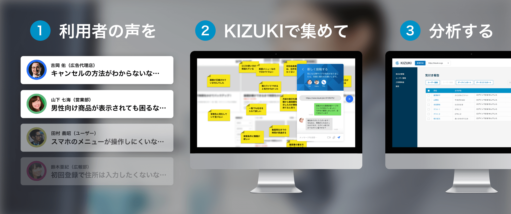
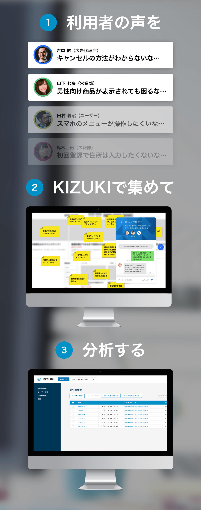
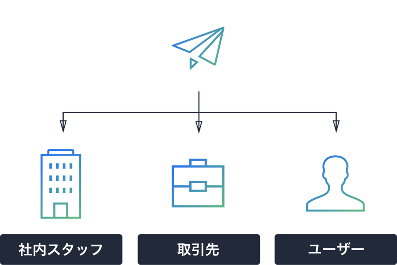

サービスやプロダクトの改善に、ユーザーの声は欠かせませんが、収集して分析するのは「手間もコストもかかる面倒な業務」です。KIZUKIは、WebサイトのHtmlにタグを挿入するだけで、利用者が気付いた問題を報告できるツールを表示し、付箋やメッセージで管理者に報告することができるようになります。
 依頼相手にメールを送るだけでユーザー登録完了。以降、WebサイトにアクセスするとKIZUKIツールが表示されます
Webサイト上に付箋を貼って報告できるので、もうスクリーンショットや資料を作成する必要はありません
報告者と管理者がチャットできるので、報告された問題について、簡単に詳細を伺うことができます
新規ページや追加機能、ABテストなど、短期間のうちに調査したい時は、ユーザーに一斉依頼が可能です
報告内容は管理画面でリスト化され、１クリックで「改善予定」「検討中」などのグルーピングを行うことができます
報告内容をテキストマイニング機能で自動的に分析し、重要な課題を発見することができます（２０１９年対応予定）
自社で気付きを集める方法と、全国のKIZUKIチェッカーから集める方法の２パターンがあります。
気付きの報告を依頼する社内スタッフや取引企業担当者、ユーザーへメールを送信するだけで登録が完了し、簡単に気付きの報告をして頂けるようになります。
全国のKIZUKIチェッカーから有償で気付きを収集することができます。手間をかけずに短期間で問題点の把握を行いたい場合にご利用ください。（開発中）
これらの機能の実装を検討中です。要望の多い機能から開発していきますので、ぜひご要望を私達に送ってください。
１クリックでWebサイトの画像撮影・文字入力・切り抜きを行い、管理者へ報告します。
スマートフォンで撮影した動画をアップロードし、UXの問題箇所を簡単に発見できます。
報告された問題を自動的に分類および分析し、重要課題の特定を行います。
レスポンシブなどでスマートフォンに対応したサイトでも気付きを報告できます。
iOSやAndroidアプリの問題報告も簡単に行えるようになります。
現在、運営中のWebサイトの問題点についても１クリックで報告ができるようになります